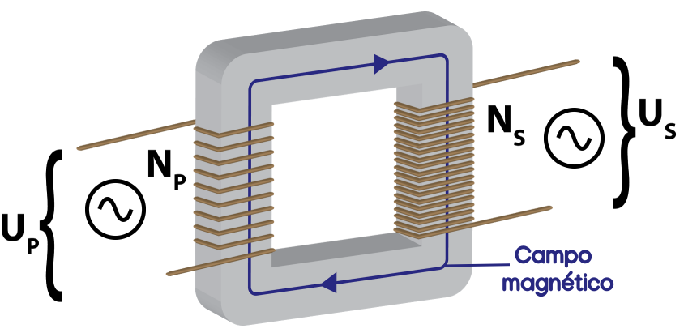

Aula11-88: Transformadores
Transformadores
Transformadores são dispositivos elétricos capazes de promover o aumento ou a diminuição de diferenças de potencial num determinado circuito elétrico.
Ao impormos corrente elétrica à bobina primária (bobina alimentada pela tensão da rede, isto é, pela tensão de entrada), esta produzirá um campo magnético que se estenderá por todo o núcleo metálico do aparelho. Se a corrente imposta for alternada (portanto, o dispositivo precisa ser alimentado com corrente alternada), então o campo magnético presente no núcleo também se alternará; e essa alternância de campo magnético, por sua vez, fará surgir uma corrente elétrica na bobina secundária (bobina de onde sai a tensão transformada). Manipulando o número de voltas NP e NS que constituem as bobinas, podemos obter a modificação de tensão desejada.

A relação entre a tensão primária UP e a tensão secundária US é dada pela expressão:
ou
Como podemos observar, a tensão secundária é diretamente proporcional ao número de voltas da bobina secundária (o mesmo ocorre em relação à tensão primária). A razão disso é bem simples: quanto mais voltas houver, maior será a área sujeita à variação de fluxo magnético e, por conseguinte, maior será essa variação; sendo maior a variação do fluxo magnético, maior será a força eletromotriz induzida.
Potência em transformadores ideais
Chamamos de ideal o transformador em que desconsideramos as perdas indesejáveis de energia. Portanto, num transformador ideal, toda a potência que entra no dispositivo é convertida em potência de saída, sem perdas.
Dessa relação, e daquela que envolve as tensões e o número de ciclos das bobinas, podemos extrair uma outra, que relaciona as correntes de entrada e de saída: